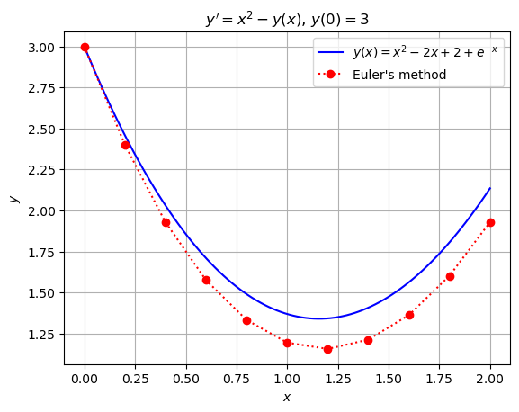

Lecture 2: Euler’s method.#
Numerical solutions to ODE’s.#
Suppose that we want to compute a numerical solution to the first-order IVP
over the interval \([a,b]\). Choosing some positive integer \(n\), our goal is to compute a sequence of points \((x_i,y_i)\) so that if \(y\) is the true solution, then
for \(i = 0,1,\dots, n\). We say that there are \(n\) steps, or equivalently \(n+1\) mesh points or nodes. The distance \(h_i=x_{i+1}-x_i\) is called the \(i\)th step-size, which may be variable. For much of this course, however, we will use equally-spaced meshes with step-size \(h=(b-a)/n\).
Linearization and Euler’s method.#
Once the mesh points have been chosen, the most straightforward approach to computing the \(y_i\)’s is known as Euler’s method. The basis for Euler’s method is tangent line approximation from calculus known as linearization. Recall that if \(y\) is differentiable at \(x=x_0\), then
when \(x\) is sufficiently close to \(x_0\). Therefore, if \(y\) is the true solution to the IVP (3) and \(h=x_1-x_0\) is small, then
Whence choosing \(y_1 = y_0 + hf(x_0, y_0)\), we have \(y_1\approx y(x_1)\) as desired. Continuing in this fashion, Euler’s method is defined by the recurrence
for \(i\ge 0\).
Python implementation.#
The math263 module contains the following Python implementation of Euler’s method.
import numpy as np
def euler(f, a, b, y0, n):
'''
numerically solves IVP
y' = f(x,y), y(a) = y0
over the interval [a, b] via n steps of Euler's method
'''
h = (b-a)/n;
x = np.linspace(a, b, num=n+1);
y = np.empty(x.size);
y[0] = y0;
for i in range(n):
y[i+1] = y[i] + h * f(x[i], y[i]);
return (x, y)
Example.#
We now show how to use Euler’s method to solve the IVP
over the interval \([0, 2]\).
# load modules
import math263
import numpy as np
from tabulate import tabulate
# define IVP parameters
f = lambda x, y: x**2 - y;
a, b = 0, 2;
y0 = 3;
# use the Euler's method in math263 module to compute numerical solution
n = 10;
(xi, yi) = math263.euler(f, a, b, y0, n);
# tabulate the results
data = np.transpose(np.stack((xi, yi)));
hdrs = ["i", "x_i", "y_i"];
print("Euler's method");
print(tabulate(data, hdrs, tablefmt='mixed_grid', floatfmt='0.5f', showindex=True));
Euler's method
┍━━━━━┯━━━━━━━━━┯━━━━━━━━━┑
│ i │ x_i │ y_i │
┝━━━━━┿━━━━━━━━━┿━━━━━━━━━┥
│ 0 │ 0.00000 │ 3.00000 │
├─────┼─────────┼─────────┤
│ 1 │ 0.20000 │ 2.40000 │
├─────┼─────────┼─────────┤
│ 2 │ 0.40000 │ 1.92800 │
├─────┼─────────┼─────────┤
│ 3 │ 0.60000 │ 1.57440 │
├─────┼─────────┼─────────┤
│ 4 │ 0.80000 │ 1.33152 │
├─────┼─────────┼─────────┤
│ 5 │ 1.00000 │ 1.19322 │
├─────┼─────────┼─────────┤
│ 6 │ 1.20000 │ 1.15457 │
├─────┼─────────┼─────────┤
│ 7 │ 1.40000 │ 1.21166 │
├─────┼─────────┼─────────┤
│ 8 │ 1.60000 │ 1.36133 │
├─────┼─────────┼─────────┤
│ 9 │ 1.80000 │ 1.60106 │
├─────┼─────────┼─────────┤
│ 10 │ 2.00000 │ 1.92885 │
┕━━━━━┷━━━━━━━━━┷━━━━━━━━━┙
Since the IVP (4) can be solved analytically, we can plot the symbolic and numerical solutions together on the same set of axes.
import sympy
import matplotlib.pyplot as plt
from IPython.display import display, Markdown
# solve the IVP symbolically with the sympy library
x = sympy.Symbol('x');
y = sympy.Function('y');
ode = sympy.Eq(y(x).diff(x), f(x,y(x)));
soln = sympy.dsolve(ode, y(x), ics={y(a): y0});
display(Markdown(f"The true solution to the IVP is ${sympy.latex(soln)}$."))
rhs=f(x,y(x));
# convert the symbolic solution to a Python function and plot it with matplotlib.pyplot
sym_y = sympy.lambdify(x, soln.rhs, modules=['numpy']);
xvals = np.linspace(a, b, num=100);
ex = plt.figure();
plt.plot(xvals, sym_y(xvals), color='b');
plt.plot(xi, yi,'ro:');
plt.legend([f"${sympy.latex(soln)}$","Euler's method"], loc='upper right');
plt.title(f"$y' = {sympy.latex(rhs)}$, $y({a})={y0}$");
plt.xlabel(r"$x$");
plt.ylabel(r"$y$");
plt.grid(True)
The true solution to the IVP is $y{\left(x \right)} = x^{2} - 2 x + 2 + e^{- x}$.
Note that although the sequence of errors \(e_i = |y(x_i) - y_i|\) is not necessarily increasing, there is a tendency for the errors made at previous steps tend to build up at subsequent steps.
Below we overlay the plot with a direction field plot for the ODE of (4). This helps us to see that every pair of of points \((x_i, y_i)\), \((x_{i+1}, y_{i+1})\) approximates the true solution to the ODE that passes through the point \((x_i, y_i)\), but not necessarily the solution to the given IVP which passes through the initial condition point \((x_0, y_0)\).
# set window boundaries
xmin, xmax = a, b;
ymin, ymax = 1, 3;
# set step sizes defining the horizontal/vertical distances between mesh points
hx, hy = (b-a)/n, 0.1;
# sample x- and y-intervals at appropriate step sizes; explicitly creating array of doubles
xvals = np.arange(xmin, xmax+hx, hx, dtype=np.double);
yvals = np.arange(ymin, ymax+hy, hy, dtype=np.double);
# create rectangle mesh in xy-plane; data for each variable is stored in a separate rectangle array
X, Y = np.meshgrid(xvals, yvals);
dx = np.ones(X.shape); # create a dx=1 at each point of the 2D mesh
dy = f(X,Y); # sample dy =(dy/dx)*dx, where dx=1 at each point of the 2D mesh
# normalize each vector <dx, dy> so that it has "unit" length
[dx, dy] = [dx, dy]/np.sqrt(dx**2 + dy**2);
# plot direction field on top of previous plot
plt.figure(ex);
plt.quiver(X, Y, dx, dy, color="k", headlength=0, headwidth=1, pivot="mid", label='_nolegend_');
plt.show();
Exercises.#
Consider the IVP \(y'=2x-3y+1, y(0)=1\).
Solve the IVP symbolically and plot the solution over the interval \([0,1]\).
Use Euler’s method to solve the IVP numerically over the interval \([0, 1]\) with \(n\) steps for \(n = 8, 16, 32, 64\).
Plot the numerical approximations together with the true solution on a single set of axes. Be sure to use labels, legends, and colors so that the different results are distinguishable.
Compute the absolute and relative errors at \(x = 1\) for each of your numerical solutions. Display the results in a table with (of course) appropriate labels/headers. What seems to be happening to the errors each time that we double the number of steps?
Consider the IVP \(y'=x^2+y^2, y(0)=1\).
Solve the IVP symbolically.
Use Euler’s method with step sizes \(h = 0.1\) and \(h = 0.05\) to obtain a numerical approximation to \(y(1/2)\).